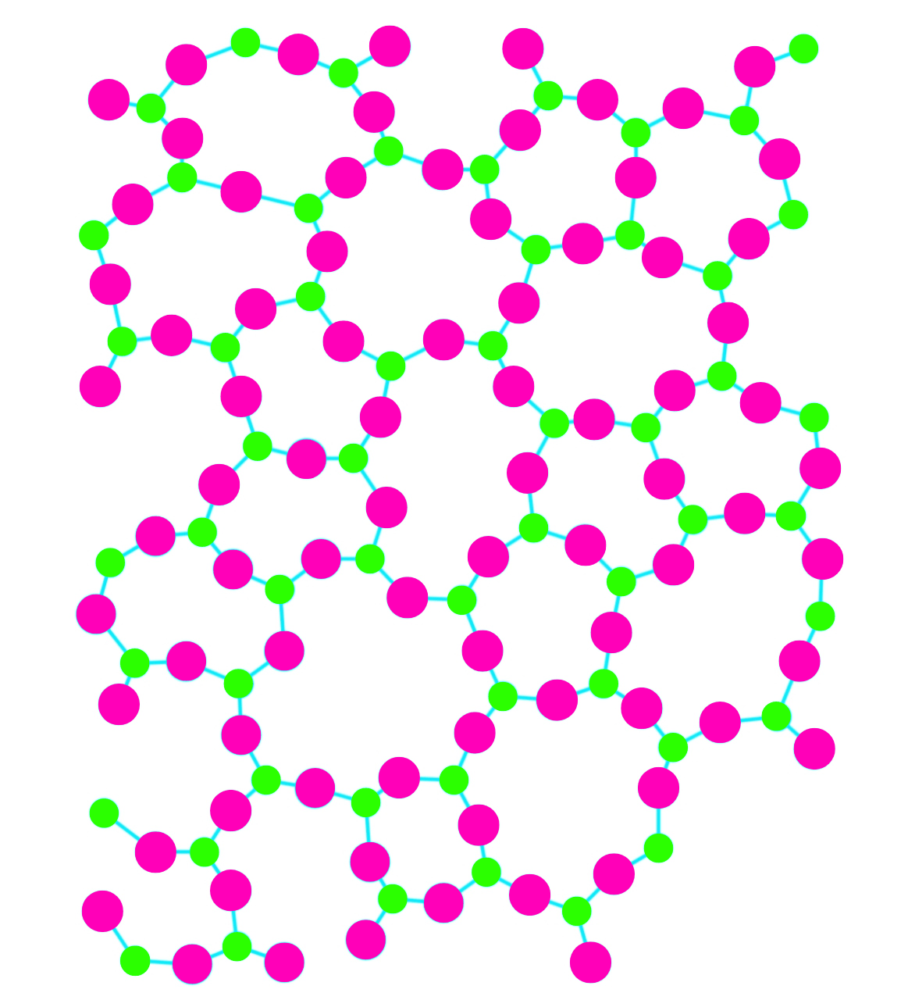

अक्रिस्टलीय ठोस किसे कहते है ?
वे ठोस जिसमे अवयवी कण (परमाणु, अणु और आयन) की व्यवस्था निश्चित क्रम मे नहीं होती उन्हें अक्रिस्टलीय ठोस कहते है | इनमे कणों की व्यवस्था मे नियमित और पुनरावृत पैटर्न केवल अल्प दूरियों तक देखा जाता है |
अक्रिस्टलीय ठोस के उदाहरण -
काँच, रबड़, प्लास्टिक, लकड़ी, पत्थर आदि |
अक्रिस्टलीय ठोस के गुण क्या होते है ?
- यह समदैशिक प्रकृति का होता है |
- इनके गलनांक निश्चित ना होकर एक परास मे होते है |
- इनमें लघु परासी व्यवस्था होती है |
- इनकी प्रकृति आभासी ठोस की होती है तथा इन्हें अतिशीतित द्रव भी कहते है |
- गलन ऊष्मा अलग - अलग भागो की अलग - अलग होती है |
- इन्हें किसी वस्तु से काटने पर प्राप्त सतहे खुरदुरी होती है |
- इनके अवयवी कणों द्वारा निश्चित ज्यामितीये संरचना प्राप्त नहीं होती है |
अक्रिस्टलीय ठोस का दूसरा नाम क्या है ?
अक्रिस्टलीय ठोस को एक दुसरे नाम से भी पुकारते है जो बेरवादार ठोस कहलाता है | कई बार Exam मे अक्रिस्टलीय ठोस की जगह इसको बेरवादार ठोस के नाम से भी पूछ लिया जाता है |
अक्रिस्टलीय ठोस के प्रकार कौन - कौन से होते है ?
क्रिस्टलीय ठोस के प्रकार होते है लेकिन आज - तक कही भी अक्रिस्टलीय ठोस के प्रकार के बारे मे कोई भी उल्लेख नहीं मिलता है अर्थात अक्रिस्टलीय ठोस के प्रकार नहीं होते है |
अक्रिस्टलीय ठोस के उपयोग क्या है ?
हमारे दैनिक जीवन मे सबसे ज्यादा अक्रिस्टलीय ठोस के उपयोग ही किये जाते है कुछ अक्रिस्टलीय ठोस के नाम काँच, रबड़, प्लास्टिक, लकड़ी, पत्थर आदि से ही आपको पता चल जायेगा की अक्रिस्टलीय ठोस के क्या - क्या उपयोग है |